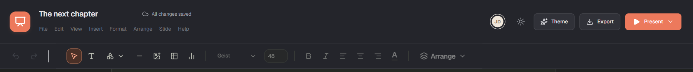

JD avatar
Editor header and project library · top-right circular JD button
What is wrong
Clicking the avatar opens no menu or page. The initials are hard-coded.
Decision options
Remove the button behavior (keep decorative initials), or implement a workspace/profile menu.
Evidence
Browser-checked in the audit; no dialog or navigation appeared.
Source references
frontend/src/features/editor/Editor.tsx
frontend/src/features/home/Home.tsx
